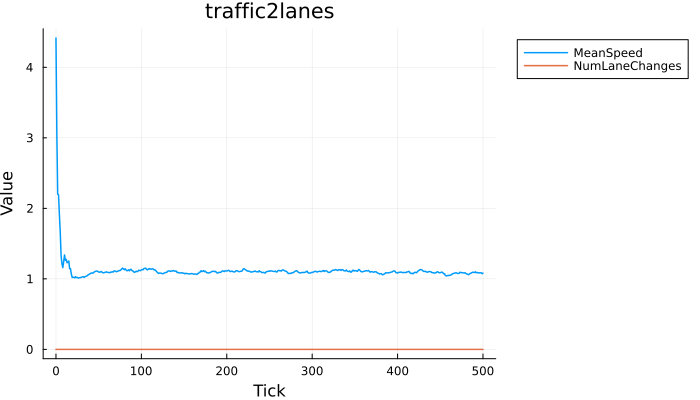
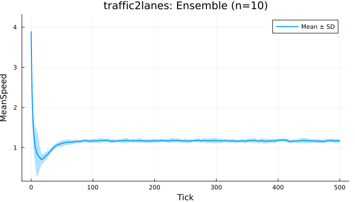
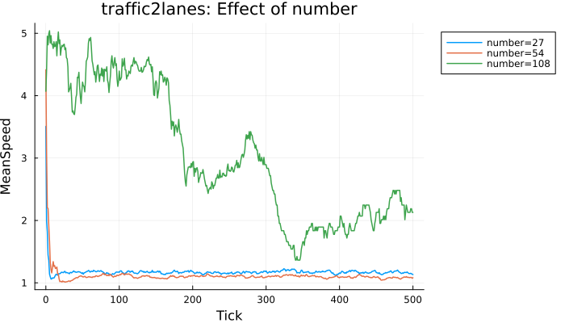

Traffic 2 Lanes
Overview
WHAT IS IT?
This model is a more sophisticated two-lane version of the “Traffic Basic” model. Much like the simpler model, this model demonstrates how traffic jams can form. In the two-lane version, drivers have a new option; they can react by changing lanes, although this often does little to solve their problem.
As in the Traffic Basic model, traffic may slow down and jam without any centralized cause.
THINGS TO NOTICE
Traffic jams can start from small “seeds.” Cars start with random positions. If some cars are clustered together, they will move slowly, causing cars behind them to slow down, and a traffic jam forms.
Even though all of the cars are moving forward, the traffic jams tend to move backwards. This behavior is common in wave phenomena: the behavior of the group is often very different from the behavior of the individuals that make up the group.
Just as each car has a current speed, each driver has a current patience. Each time the driver has to hit the brakes to avoid hitting the car in front of them, they loose a little patience. When a driver’s patience expires, the driver tries to change lane. The driver’s patience gets reset to the maximum patience.
When the number of cars in the model is high, drivers lose their patience quickly and start weaving in and out of lanes. This phenomenon is called “snaking” and is common in congested highways. And if the number of cars is high enough, almost every car ends up trying to change lanes and the traffic slows to a crawl, making the situation even worse, with cars getting momentarily stuck between lanes because they are unable to change. Does that look like a real life situation to you?
Watch the MEAN-SPEED monitor, which computes the average speed of the cars. What happens to the speed over time? What is the relation between the speed of the cars and the presence (or absence) of traffic jams?
Look at the two plots. Can you detect discernible patterns in the plots?
The grass patches on each side of the road are all a slightly different shade of green. The road patches, to a lesser extent, are different shades of grey. This is not just about making the model look nice: it also helps create an impression of movement when using the FOLLOW SELECTED CAR button.
THINGS TO TRY
What could you change to minimize the chances of traffic jams forming, besides just the number of cars? What is the relationship between number of cars, number of lanes, and (in this case) the length of each lane?
Explore changes to the sliders SLOW-DOWN and SPEED-UP. How do these affect the flow of traffic? Can you set them so as to create maximal snaking?
Change the code so that all cars always start on the same lane. Does the proportion of cars on each lane eventually balance out? How long does it take?
Try using the "default" turtle shape instead of the car shape, either by changing the code or by typing ask turtles [ set shape "default" ] in the command center after clicking SETUP. This will allow you to quickly spot the cars trying to change lanes. What happens to them when there is a lot of traffic?
EXTENDING THE MODEL
The way this model is written makes it easy to add more lanes. Look for the number-of-lanes reporter in the code and play around with it.
Try to create a “Traffic Crossroads” (where two sets of cars might meet at a traffic light), or “Traffic Bottleneck” model (where two lanes might merge to form one lane).
Note that the cars never crash into each other: a car will never enter a patch or pass through a patch containing another car. Remove this feature, and have the turtles that collide die upon collision. What will happen to such a model over time?
NETLOGO FEATURES
Note the use of mouse-down? and mouse-xcor/mouse-ycor to enable selecting a car for special attention.
Each turtle has a shape, unlike in some other models. NetLogo uses set shape to alter the shapes of turtles. You can, using the shapes editor in the Tools menu, create your own turtle shapes or modify existing ones. Then you can modify the code to use your own shapes.
RELATED MODELS
“Traffic Basic”: a simple model of the movement of cars on a highway.
“Traffic Basic Utility”: a version of “Traffic Basic” including a utility function for the cars.
“Traffic Basic Adaptive”: a version of “Traffic Basic” where cars adapt their acceleration to try and maintain a smooth flow of traffic.
“Traffic Basic Adaptive Individuals”: a version of “Traffic Basic Adaptive” where each car adapts individually, instead of all cars adapting in unison.
“Traffic Intersection”: a model of cars traveling through a single intersection.
“Traffic Grid”: a model of traffic moving in a city grid, with stoplights at the intersections.
“Traffic Grid Goal”: a version of “Traffic Grid” where the cars have goals, namely to drive to and from work.
“Gridlock HubNet”: a version of “Traffic Grid” where students control traffic lights in real-time.
“Gridlock Alternate HubNet”: a version of “Gridlock HubNet” where students can enter NetLogo code to plot custom metrics.
HOW TO CITE
If you mention this model or the NetLogo software in a publication, we ask that you include the citations below.
For the model itself:
- Wilensky, U. & Payette, N. (1998). NetLogo Traffic 2 Lanes model. http://ccl.northwestern.edu/netlogo/models/Traffic2Lanes. Center for Connected Learning and Computer-Based Modeling, Northwestern University, Evanston, IL.
Please cite the NetLogo software as:
- Wilensky, U. (1999). NetLogo. http://ccl.northwestern.edu/netlogo/. Center for Connected Learning and Computer-Based Modeling, Northwestern University, Evanston, IL.
COPYRIGHT AND LICENSE
Copyright 1998 Uri Wilensky.

This model is licensed under the Creative Commons Attribution-NonCommercial-ShareAlike 3.0 License. To view a copy of this license, visit https://creativecommons.org/licenses/by-nc-sa/3.0/ or send a letter to Creative Commons, 559 Nathan Abbott Way, Stanford, California 94305, USA.
NetLogo itself is free software for non-commercial use under the terms of the GNU General Public License (see full license information here).
To inquire about commercial licenses for either NetLogo or specific models from the models library, please contact netlogo-commercial-admin@ccl.northwestern.edu.
This model was created as part of the project: CONNECTED MATHEMATICS: MAKING SENSE OF COMPLEX PHENOMENA THROUGH BUILDING OBJECT-BASED PARALLEL MODELS (OBPML). The project gratefully acknowledges the support of the National Science Foundation (Applications of Advanced Technologies Program) – grant numbers RED #9552950 and REC #9632612.
This model was converted to NetLogo as part of the projects: PARTICIPATORY SIMULATIONS: NETWORK-BASED DESIGN FOR SYSTEMS LEARNING IN CLASSROOMS and/or INTEGRATED SIMULATION AND MODELING ENVIRONMENT. The project gratefully acknowledges the support of the National Science Foundation (REPP & ROLE programs) – grant numbers REC #9814682 and REC-0126227. Converted from StarLogoT to NetLogo, 2001.
Parameters
| Parameter | Type | Default | Description |
|---|---|---|---|
number | Int | 54 | number |
speed_up | Float64 | 38.0 | acceleration per 1000 ticks |
slow_down | Float64 | 77.0 | deceleration per 1000 ticks |
look_ahead | Int | 1 | 1 or 2 patches ahead |
road_length | Int | 51 | -25..25 |
max_ticks | Int | 500 | max ticks |
Source Code
The Julia code to run this model:
using ArkModelZoo
_, trajectory = run_traffic2lanes()Time Series

Ensemble Runs
Ten replicates with different random seeds, showing mean ± standard deviation.

Parameter Sensitivity
Varying number.

Appendix: Source Code
This model is implemented in the Ark.jl Entity-Component-System (ECS) framework. The code is split into five files, each with a distinct role:
- Parameters: a mutable struct holding all configurable values.
- Components: lightweight data types attached to individual entities (agents).
- Resources: world-level shared state accessible to all systems.
- Systems: functions that operate on entities each tick, defining model behavior.
- Model: wiring that assembles the world, registers resources and systems, and provides the run entry point.
Parameters (parameters.jl)
The parameter struct uses @kwdef so that every field has a default value and can be overridden by keyword. These defaults match the original NetLogo model’s slider settings.
Base.@kwdef mutable struct T2LParams
number::Int = 54
speed_up::Float64 = 38.0 # acceleration per 1000 ticks
slow_down::Float64 = 77.0 # deceleration per 1000 ticks
look_ahead::Int = 1 # 1 or 2 patches ahead
road_length::Int = 51 # -25..25
max_ticks::Int = 500
seed::Int = 42
endComponents (components.jl)
Components are lightweight data types attached to individual entities (agents). Mutable structs hold per-entity state, while empty tag structs act as markers for the ECS query system to efficiently filter entities.
mutable struct T2LCar
x::Int
pycor::Int # actual y position: -2..2 (intermediate during lane change)
lane::Int # logical lane: 0 or 1
speed::Float64
speed_limit::Float64
patience::Int
max_patience::Int
target_lane::Int
change::Bool
end
T2LCar() = T2LCar(0, -2, 0, 0.0, 1.0, 50, 50, 0, false)Resources (resources.jl)
Resources are world-level singletons shared across all systems, used for global state and aggregate statistics.
mutable struct T2LRoad
length::Int # x-axis length (wrapping)
# 2D occupancy: occ[x, row] where row = pycor + 3 (pycor -2..2 → row 1..5)
occ::Matrix{Entity}
end
function T2LRoad(len::Int)
T2LRoad(len, fill(zero_entity, len, 5))
end
# pycor ∈ {-2,-1,0,1,2} → row ∈ {1,2,3,4,5}
@inline pycor_to_row(py::Int) = py + 3
mutable struct T2LStats
mean_speed::Float64
num_lane_changes::Int
end
T2LStats() = T2LStats(0.0, 0)Systems (systems.jl)
Systems contain the model logic and execute in a defined order each tick. Each system struct implements either initialize! (run once at setup) or update! (run every tick).
# --- Initialization ---
struct InitT2LSystem <: System end
function initialize!(::InitT2LSystem, world::World)
params = get_resource(world, T2LParams)
rng = get_resource(world, RNGResource).rng
road = get_resource(world, T2LRoad)
len = road.length
for i in 1:params.number
lane = rand(rng, 0:1)
pycor = lane == 0 ? -2 : 2
# NetLogo: random 9.9 truncates to random 9 → integer 0..8
speed = 0.1 + Float64(rand(rng, 0:8))
speed_limit = (rand(rng, 0:10) / 10.0) + 1.0
max_pat = rand(rng, 0:49) + 10
patience = max_pat - rand(rng, 0:9)
target_lane = lane
car = T2LCar(0, pycor, lane, speed, speed_limit, patience, max_pat, target_lane, false)
# Place on empty spot — NetLogo: move-to one-of patches with [...not any? turtles-here]
# then loop { if other turtles-here fd 1 else stop }
row = pycor_to_row(pycor)
placed = false
# Try random-xcor then fd 1 loop (wrapping)
start_x = rand(rng, 1:len)
for offset in 0:(len-1)
x = mod1(start_x + offset, len)
if is_zero(road.occ[x, row])
car.x = x
eid = new_entity!(world, (car,))
road.occ[x, row] = eid
placed = true
break
end
end
if !placed
# Try other lane
other_lane = 1 - lane
other_pycor = other_lane == 0 ? -2 : 2
other_row = pycor_to_row(other_pycor)
car.lane = other_lane
car.pycor = other_pycor
car.target_lane = other_lane
for offset in 0:(len-1)
x = mod1(start_x + offset, len)
if is_zero(road.occ[x, other_row])
car.x = x
eid = new_entity!(world, (car,))
road.occ[x, other_row] = eid
placed = true
break
end
end
end
end
# Compute initial stats (matching NetLogo's update-tracked-globals in setup)
stats = get_resource(world, T2LStats)
total_speed = 0.0
n = 0
for (_, cars) in Query(world, (T2LCar,))
for c in cars
total_speed += c.speed
n += 1
end
end
stats.mean_speed = n > 0 ? total_speed / n : 0.0
return nothing
end
struct T2LGoSystem <: System end
# Helper: get entity at (pxcor+dx, pycor+dy) with x-wrapping, no y-wrapping
@inline function turtles_at(road::T2LRoad, x::Int, py::Int, dx::Int, dy::Int)
new_py = py + dy
if new_py < -2 || new_py > 2
return zero_entity
end
new_x = mod1(x + dx, road.length)
return road.occ[new_x, pycor_to_row(new_py)]
end
function update!(::T2LGoSystem, world::World)
params = get_resource(world, T2LParams)
rng = get_resource(world, RNGResource).rng
road = get_resource(world, T2LRoad)
stats = get_resource(world, T2LStats)
len = road.length
accel = params.speed_up / 1000.0
decel = params.slow_down / 1000.0
num_changes = 0
# Collect all cars
car_list = Tuple{Entity, Int}[]
for (eids, cars) in Query(world, (T2LCar,))
@inbounds for i in eachindex(cars)
push!(car_list, (eids[i], i))
end
end
Random.shuffle!(rng, car_list)
total_speed = 0.0
for (eid, _) in car_list
car = get_components(world, eid, (T2LCar,))[1]
# ── Speed adjustment: turtles-at 1 0 checks (pxcor+1, same pycor) ──
ahead_eid = turtles_at(road, car.x, car.pycor, 1, 0)
if !is_zero(ahead_eid) && ahead_eid != eid
ahead_car = get_components(world, ahead_eid, (T2LCar,))[1]
car.speed = ahead_car.speed
car.speed -= decel # decelerate
else
if params.look_ahead == 2
ahead2_eid = turtles_at(road, car.x, car.pycor, 2, 0)
if !is_zero(ahead2_eid) && ahead2_eid != eid
ahead2_car = get_components(world, ahead2_eid, (T2LCar,))[1]
car.speed = ahead2_car.speed
car.speed -= decel
else
car.speed += accel # accelerate
end
else
car.speed += accel
end
end
if car.speed < 0.01; car.speed = 0.01; end
if car.speed > car.speed_limit; car.speed = car.speed_limit; end
# ── Signal / Change lanes ──
if !car.change
# signal procedure
ahead_eid = turtles_at(road, car.x, car.pycor, 1, 0)
if !is_zero(ahead_eid) && ahead_eid != eid
ahead_car = get_components(world, ahead_eid, (T2LCar,))[1]
if ahead_car.speed < car.speed
car.change = true
end
# if ahead_car.speed >= car.speed, change? unchanged
else
car.change = false
end
else
# change-lanes procedure
if car.patience <= 0
if car.max_patience <= 1
car.max_patience = rand(rng, 0:9) + 1
else
car.max_patience = car.max_patience - rand(rng, 0:4)
end
car.patience = car.max_patience
if car.target_lane == 0
car.target_lane = 1
car.lane = 0
else
car.target_lane = 0
car.lane = 1
end
else
car.patience -= 1
end
if car.target_lane == car.lane
if car.target_lane == 0
car.target_lane = 1
car.change = false
else
car.target_lane = 0
car.change = false
end
else
target_pycor = car.target_lane == 1 ? 2 : -2
if car.pycor == target_pycor
# Arrived at target lane
car.lane = car.target_lane
car.change = false
num_changes += 1
else
# Move toward target pycor
dy = car.target_lane == 1 ? 1 : -1
next_py = car.pycor + dy
next_row = pycor_to_row(next_py)
cur_row = pycor_to_row(car.pycor)
# turtles-at 0 dy
up_eid = road.occ[car.x, next_row]
if is_zero(up_eid) || up_eid == eid
# Move up/down
road.occ[car.x, cur_row] = zero_entity
car.pycor = next_py
road.occ[car.x, next_row] = eid
else
# Blocked vertically — try forward: turtles-at 1 0
fwd_eid = turtles_at(road, car.x, car.pycor, 1, 0)
if is_zero(fwd_eid) || fwd_eid == eid
old_x = car.x
car.x = mod1(car.x + 1, len)
road.occ[old_x, cur_row] = zero_entity
road.occ[car.x, cur_row] = eid
else
# Blocked both ways — decelerate
car.speed -= decel
if car.speed <= 0
car.speed = 0.1
end
end
end
end
end
end
# ── Final movement (3-way decision) ──
# Re-check from current (possibly updated) position
ahead_eid = turtles_at(road, car.x, car.pycor, 1, 0)
cur_row = pycor_to_row(car.pycor)
if !is_zero(ahead_eid) && ahead_eid != eid
# Car at +1: match speed, don't move
# NetLogo: and (xcor != min-pxcor - .5) — always true since xcor >= min-pxcor
ahead_car = get_components(world, ahead_eid, (T2LCar,))[1]
car.speed = ahead_car.speed
else
ahead2_eid = turtles_at(road, car.x, car.pycor, 2, 0)
if !is_zero(ahead2_eid) && ahead2_eid != eid && car.speed > 1.0
# Car at +2, speed > 1: match speed, fd 1
ahead2_car = get_components(world, ahead2_eid, (T2LCar,))[1]
car.speed = ahead2_car.speed
old_x = car.x
car.x = mod1(car.x + 1, len)
road.occ[old_x, cur_row] = zero_entity
road.occ[car.x, cur_row] = eid
else
# jump speed — teleport forward by speed patches
steps = round(Int, car.speed)
if steps > 0
old_x = car.x
car.x = mod1(car.x + steps, len)
road.occ[old_x, cur_row] = zero_entity
road.occ[car.x, cur_row] = eid
end
end
end
total_speed += car.speed
end
n = length(car_list)
stats.mean_speed = n > 0 ? total_speed / n : 0.0
stats.num_lane_changes = num_changes
return nothing
end
# --- Termination ---
struct T2LTerminationSystem <: System end
function update!(::T2LTerminationSystem, world::World)
params = get_resource(world, T2LParams)
tick = get_resource(world, Tick)
if tick.tick + 1 >= params.max_ticks
get_resource(world, Terminate).stop = true
end
return nothing
endModel (model.jl)
The model file assembles all pieces: it creates the ECS World with the required component types, registers resources, builds the Scheduler with systems in execution order, and exposes the public run entry point. The observer pattern records the trajectory each tick.
function traffic2lanes_world(; initial_capacity::Int = 4096)
return World(T2LCar; initial_capacity = initial_capacity, allow_mutable = true)
end
function traffic2lanes_systems()
return (InitT2LSystem(), T2LGoSystem(), T2LTerminationSystem())
end
function traffic2lanes_model(params::T2LParams = T2LParams())
world = traffic2lanes_world()
_add_standard_resources!(world, params)
add_resource!(world, T2LRoad(params.road_length))
add_resource!(world, T2LStats())
scheduler = Scheduler(world, traffic2lanes_systems())
initialize!(scheduler)
return scheduler
end
struct T2LObserver end
function traffic2lanes_headers(::T2LObserver)
return ["MeanSpeed", "NumLaneChanges"]
end
function traffic2lanes_values(::T2LObserver, world::World)
stats = get_resource(world, T2LStats)
return Float64[stats.mean_speed, Float64(stats.num_lane_changes)]
end
function run_traffic2lanes(; params::T2LParams = T2LParams(), observe::Bool = true)
return _run_model(traffic2lanes_model, T2LObserver(), traffic2lanes_values; params, observe)
end